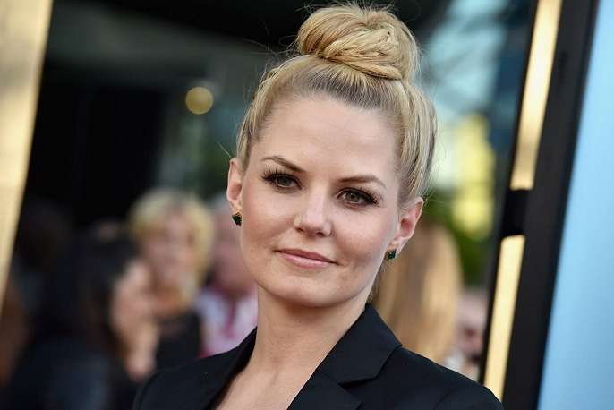
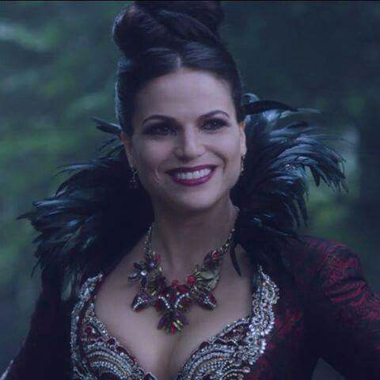
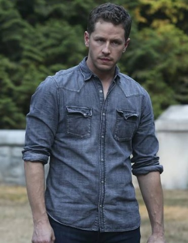
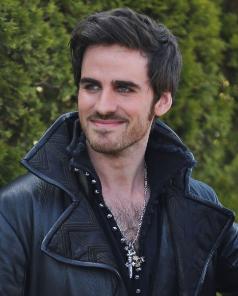
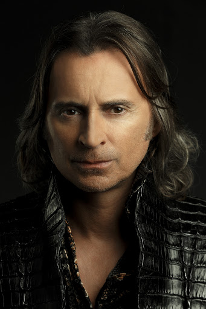

Джаред Скотт Гилмор родился в Сан-Диего, штат Калифорния, 30 мая 2000 года, в один день и час с сестрой двойняшкой Тейлор. Именно амбиции сестренки, с малолетства грезившей о карьере актрисы, привели мальчика на творческую стезю.
Как писали в Variety, малыш случайно столкнулся с волонтерами по поиску талантов, интересовавшихся Тейлор. Парнишку тоже взяли «на заметку». После множества кастингов Джаред Гилмор добился первой работы как манекенщик, рекламировавший футболки для мальчиков. Родители побеспокоились, чтобы их отпрыск посещал школу обучения для актеров, моделей и певцов – дома, в Сан-Диего, курс длился 2 года.
В 2008-м юное дарование появилось в нескольких телешоу. Джаред Гилмор Спустя год школьника утвердили на роль в культовый ретро-сериал «Безумцы», уже полюбившийся аудитории. Гилмор стал третьим исполнителем роли Бобби, сына главных героев Дона (Джон Хэмм) и Бетти (Дженьюари Джонс) Дрейперов. Так как маленькие артисты слишком быстро росли, персонажа изображали 4 человека. До Джареда Бобом были Максвелл Хакаби и Аарон Харт. На счету Гилмора 19 эпизодов в 3-м и 4-м сезонах. Его экранной «сестре» Салли Бет повезло больше: Кирнан Шипка снималась с начала до финала шоу, буквально выросла на съемках.

Дженнифер Мари Моррисон – уроженка Чикаго, ее день рождения 12 апреля 1979-го. Детство будущей Эммы Свон прошло в небольшом городке Арлингтон-Хейнс. Она самая старшая из трех детей, сестра Джулия – певица, автор песен, брат Даниэль возглавляет школу. Это у Моррисонов семейное: родители преподавали. А главу семьи Совет по образованию штата назвал «Учителем 2003-го года».
Джен посещала Южную среднюю и Проспектскую высшую школы, Дженнифер Моррисон занималась музыкой, пением, чирлидингом. В юности Моррисон дружила с писателем Яном Бреннаном. В 2000-ном она закончила Университет Лойолы, а потом занималась в театральной труппе.
Будучи моделью-ребенком, Дженнифер принимала участие в рекламных кампаниях. Снимаясь для детского «глянца» Спорт Иллюстрейтед-1992, Моррисон была поставлена «в пару» к баскетболисту Джордану, их общее фото украсило обложку.
Детей у Дженнифер Моррисон нет, как и мужа.

Лана Мария Паррия Лана Паррия (встречаются другие варианта написания – Паррилья и Паррийя) родилась в Нью-Йорке 15 июля 1977 года. Семья жила в Бруклине. Мать актрисы итальянка Долорес Ди Аззара сицилийского происхождения, отец, Сэм Паррия, из Пуэрто-Рико. В течение 11-ти сезонов он играл в бейсбол, в том числе, как аутфилдер в высшей лиге «Филадельфии Филлис» в 1970-м. Лана – племянница бродвейской и телевизионной артистки Кэндис Аззары.
Присоединившись к Донни Уолбергу и Нилу МакДоно, актриса Лана Паррия на два года стала фельдшером (а потом новичком полицейской академии) Терезой из криминальной теледрамы «Бумтаун». Роль принесла исполнительнице премию Imagen. Шоу отменили после двух эпизодов 2-го сезона.
Эпизоды и гостевые роли (сериалы «Клиент всегда мертв», «Остаться в живых», «Медиум») не могли удовлетворить амбиции. Дольше всего актриса задержалась в триллере «24 часа» с Кифером Сазерлендом. 12 серий 4-го сезона Лана изображала сотрудницу контртеррористического подразделения Сару Гэвин. В 13-м эпизоде героиня попыталась помешать продвижению Мишель Десслер, и ее ликвидировали.
В «Однажды в сказке» Лана – хорошая мать, в реальности дети пока остаются несбывшейся мечтой звезды. Путешествуя по Израилю в апреле 2013-го года, красавица ответила согласием на предложение руки и сердца. Ее избранником был руководитель технологической компании Фред Ди Бласио.

Фанаты сериала знают его как «Прекрасного Принца», жениха, а потом мужа Белоснежки, которого в «обычном» мире звали Дэвидом. Джошуа «Джош» Пол Даллас родился в Луисвилле, штат Кентукки 18 декабря 1978-го года и увлекался театром со школы.
В сезоне 2018/2019 гг. Джошуа играл центрального героя драмы NBC «Манифест». Джошуа Даллас Доцент Бен Стоун вместе с сестрой был пассажиром рейса №828. После небольшой «болтанки» в воздухе и приземления выяснилось, что на Земле за это время прошло больше пяти лет. Сериал про самолет продлили на второй сезон.
гда Джошуа работал в виндзорском театре (Англия), встретился с британской коллегой и влюбился. Лара Пулвер (Ирэн Адлер в «Шерлоке») вышла замуж за американца через четыре года, в 2007-м.
Постоянные расставания и съемки в «Однажды в сказке» разрушили брак Далласа. К концу 2011-го «Принц» был без ума от «Белоснежки», но помолвка Джошуа и Джиннифер Гудвин состоялась только в 2013, а бракосочетание – в 2014-м. Через полтора месяца после свадьбы родился первенец пары Оливер. Сейчас Даллас и его жена воспитывают двух сыновей, Хьюго появился на свет в июне 2016.

О’Донохью женился на школьной учительнице[9] Хелен 2 июля 2009 года[10][11][12]. У супругов есть сын Эван (род. 2013)[12] и дочь Милли (род. 2017).
Ранняя карьера О’Донохью была связана как с театром, так и с работами на телевидении в Ирландии и Великобритании[4]. В 2003 году он получил награду «Ирландского кино и телевидения» в категории «Лучший новый талант» за роль Нормана в фильме «Домой на Рождество».
Он исполнил роль Филиппа, герцога Баварскогоruen в эпизоде третьего сезона исторического телесериала «Тюдоры» в 2009 году. В 2011 у О’Донохью состоялся голливудский дебют в драматическом фильме «Обряд», где он сыграл наряду с Энтони Хопкинсом. Для прослушивания в фильме О’Донохью специально подготовил видео в домашней студии его друзей и отправил в Соединенные Штаты.
В 2012 году О’Донохью получил роль Капитана Киллиана «Крюка» Джонса во втором сезоне культового телесериала ABC «Однажды в сказке». В 2014 году он получил главную роль в независимом фильме «Песчаная буря»].

С декабря 1997 года Роберт Карлайл женат на гримёре-художнике Анастасии Ширли; у них трое детей: дочь — Ава (род. 2002), сыновья — Харви (род. 2004) и Перси Джозеф (род. 2006). С Анастасией познакомился на съёмках сериала «Метод Крекера». Семья живёт в Глазго. Любимая футбольная команда — «Рейнджерс»[25].
В начале января 2006 года скончался отец Роберта, с которым он был очень близок; актёр на время прекратил какую-либо публичную деятельность и ушёл из фильма «Настоящий север», в котором начал сниматься в главной роли (его заменил Питер Маллан).
Фильмография.
Благодаря пьесам Артура Миллера Карлайл увлёкся театром, что привело его в 21 год в актёрскую студию при Центре искусств Глазго. Впоследствии, в 1983 году он поступил в Королевскую шотландскую академию музыки и драматического искусства (англ. Royal Scottish Academy of Music and Drama), откуда ушёл в 1986-м, разочаровавшись в учёбе[10][11].
До начала 1990-х годов он преимущественно участвовал в различных театральных постановках. Вместе с четырьмя актёрами-друзьями основал театральную группу Raindog Theatre Company, которая выпустила в 1991 году свой первый спектакль — сценическую версию романа «Пролетая над гнездом кукушки»[12][13]. Первой заметной ролью в кино стал фильм «Рифф Рафф» британского режиссёра Кена Лоуча. Мировую известность ему принесли фильмы «На игле» (1996) и «Мужской стриптиз» (1997), за который Роберт получил премию BAFTA. Он также принял участие в «бондиане», снявшись в девятнадцатой картине цикла — «И целого мира мало» (1999).
Критики неоднократно отмечали универсальность актёрского мастерства Карлайла и разнообразие его ролей (от священника до каннибала)[14][15]. Он скрупулёзно изучает характер своих персонажей, добиваясь наибольшей реалистичности и образности: так, однажды он спал пять ночей на лондонских улицах вблизи вокзала «Ватерлоо», работая над ролью бездомного в телефильме Safe (BBC, 1993)[16].
В перечне его значительных телевизионных работ — полицейский сериал «Хэмиш Макбет» (1995—1997, BBC), канадский мини-сериал «Гитлер: Восхождение дьявола» (2003, CBC Television), «Живой товар» (2005, Lifetime), фантастические сериалы «Звёздные врата: Вселенная» (2009—2011, Syfy) и «Однажды в сказке»[17] (2011—2018, ABC).
В начале июня 2014 года Роберт Карлайл в качестве режиссёра приступил к съёмкам своего первого полнометражного фильма «Легенда о Барни Томсоне»IMDb в жанре чёрной комедии по роману Дугласа Линдси «Долгая полночь Барни Томсона»[18]. Он же играет главную роль — парикмахера Барни, волей нелепых случайностей сделавшегося серийным убийцей. В актёрском ведущем составе — Эмма Томпсон, Рэй Уинстон и Том Кортни. Премьера фильма состоялась в июне 2015 года на Эдинбургском кинофестивале[19]. В мае 2016 года в Шотландии начались съёмки продолжения фильма «На игле», где Роберт вернулся к образу Бегби через 20 лет после тех событий, что имели место в первой картине